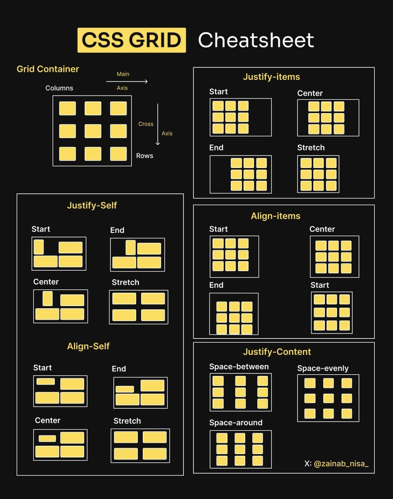
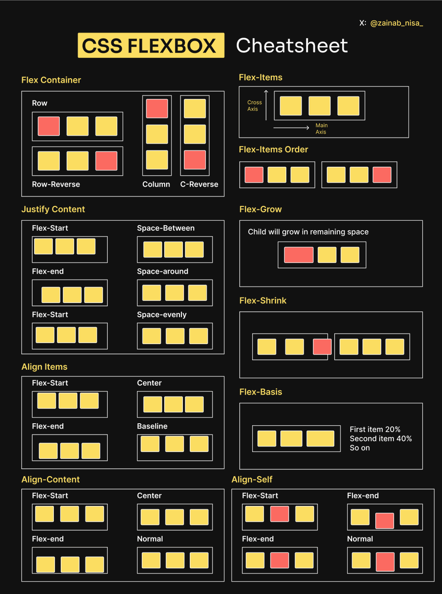

CSS Grid Layout is used to create two-dimensional web layouts using rows and columns. It is mainly used because it allows developers to design complex and structured webpage layouts in a simple and organized way. CSS Grid is very useful when a webpage has multiple sections that need to be placed both horizontally and vertically at the same time. It is commonly used in dashboards, image galleries, portfolio websites, and full webpage layouts where proper alignment and structure are important. CSS Grid helps make web design more flexible, clean, and easier to manage.

CSS Flexbox is used to arrange elements in a single direction, either in a row or a column. It is mainly used because it makes alignment and spacing of elements very easy and responsive. Flexbox is commonly used in navigation bars, menus, buttons alignment, centering content, and small UI components where items need to adjust automatically according to screen size. It helps developers create flexible and mobile-friendly layouts without complex code. Flexbox is simple, powerful, and widely used in modern web design for building responsive user interfaces.